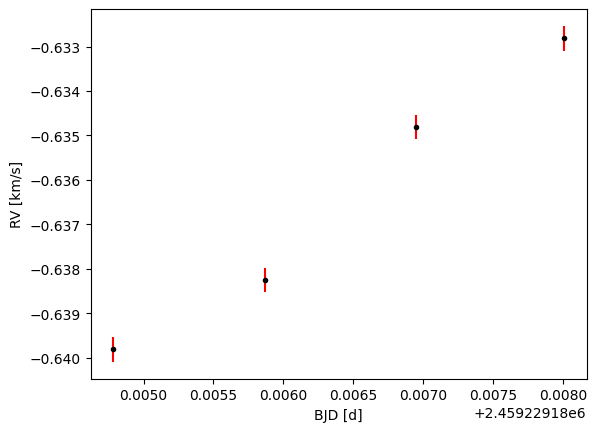

How to download NEID Solar data from the NEID Atrchives at NExScI
This tutorial was originally developed for the Sun-as-a-Star Splinter at the Extremely
Precise Radial Velocities Sixth Workshop (EPRV6) in June 2024.
Main contrutors: Khaled Al Moulla and Ryan Rubenzhal.
This tutorial uses the NEID Archive Python API. To install it use:
pip install git+https://github.com/Caltech-IPAC/pyNEID.git
Import packages and set up output directory
from astropy.io import fits
from glob import glob
import matplotlib.pyplot as plt
import numpy as np
import os
from pyneid.neid import neid
output_directory = 'sun_neid_l2/'
os.makedirs(output_directory, exist_ok=True)
Define range of time and basic parameter, then query the NEID files and download them.
For this tutorial we will be downloading the level 2 data (the RV level) as FITS files.
date_min = '2021-01-14 00:00:00'
date_max = '2021-01-14 23:59:59'
param = dict()
param['datalevel'] = 'solarl2'
param['datetime' ] = date_min + '/' + date_max
# Query
Neid.query_criteria(param, format='csv', outpath=output_directory+'temp.tbl')
# Download L2 files
Neid.download(output_directory+'temp.tbl', 'solarl2', 'csv', output_directory, start_row=0, end_row=3)
# Delete temporary file
os.remove(output_directory+'temp.tbl')
To extract the relevant information, loop over the files and extract the needed data from
the headers.
files = glob(output_directory+'**/*.fits', recursive=True)
Nfile = len(files)
# Empty arrays for header variables
time_val = np.empty(Nfile)
vrad_val = np.empty(Nfile)
vrad_err = np.empty(Nfile)
# Loop files
for i in range(Nfile):
# Open FITS file
hdul = fits.open(files[i])
# Extract header variables
header = hdul[12].header
time_val[i] = header['CCFJDMOD']
vrad_val[i] = header['CCFRVMOD']
vrad_err[i] = header['DVRMSMOD']
# Close FITS file
hdul.close()
Example plot of the extracted data.
plt.figure()
plt.errorbar(time_val, vrad_val, vrad_err, fmt='.', color='k', ecolor='r')
plt.xlabel('BJD [d]')
plt.ylabel('RV [km/s]')
plt.show()
